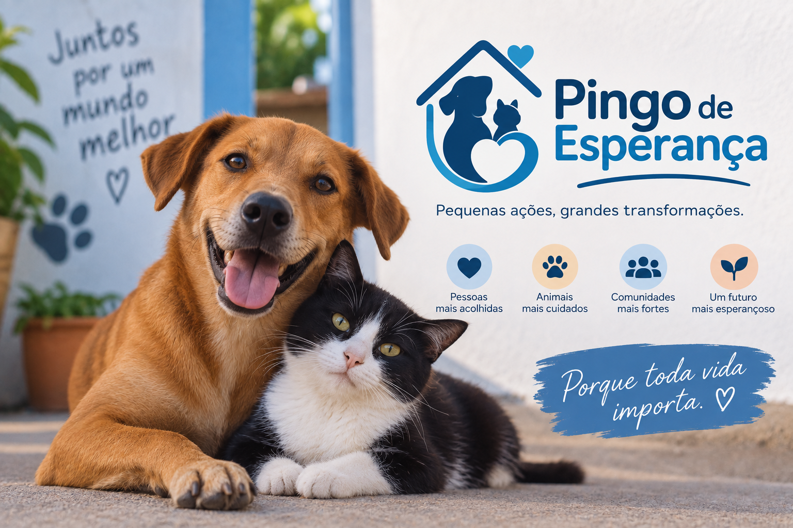

Sobre a ONG

A Pingo de Esperança é uma organização do terceiro setor dedicada a promover ações sociais e contribuir para a melhoria da qualidade de vida de pessoas e animais em situação de vulnerabilidade.
Nosso trabalho é realizado por meio de projetos sociais, voluntariado e campanhas de doação, buscando gerar impacto positivo e levar cuidado, apoio e esperança a quem precisa.
Faça parte dessa causa
Pequenas ações podem gerar grandes mudanças. Você pode participar das iniciativas da Pingo de Esperança por meio do voluntariado e de outras formas de contribuição.
♡ Quero participarSiga nossas redes sociais
Acompanhe nossas ações, campanhas e projetos e ajude a divulgar a Pingo de Esperança.
Entre em contato
Tem alguma dúvida ou quer saber mais sobre nossos projetos? Entre em contato com a nossa equipe.
Av. das Acácias, 850 - Vila Mariana, São Paulo/SP
CNPJ: 12.345.678/0001-90
Telefone: (11) 99999-9999
E-mail: contato@pingodeesperanca.org.br